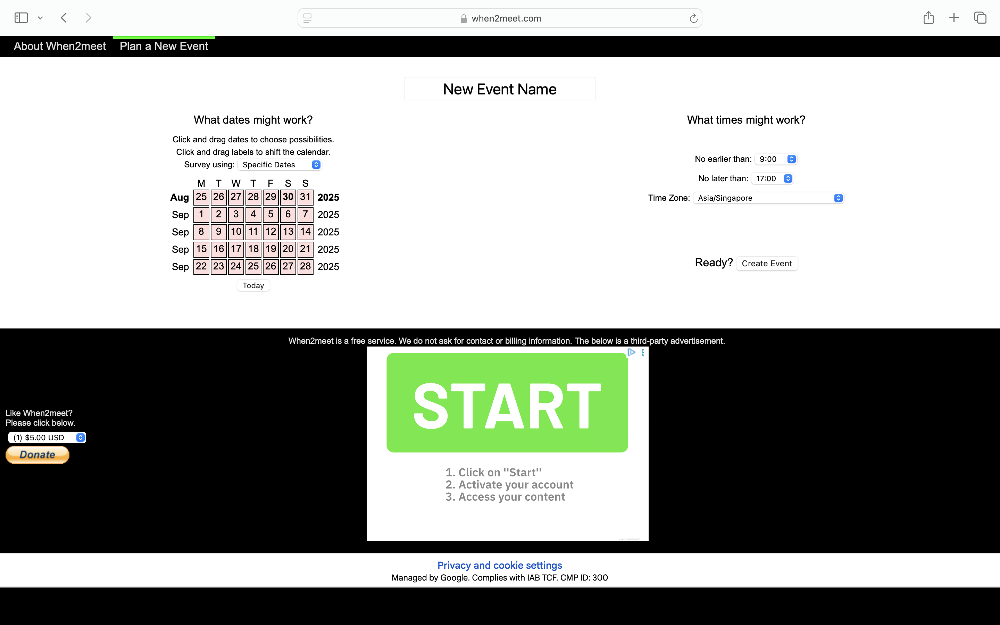
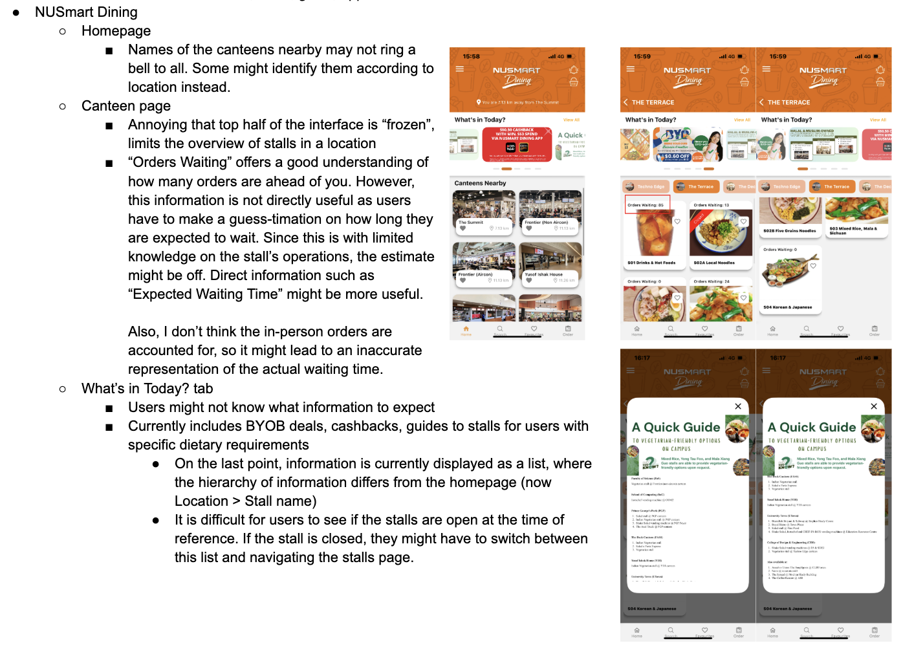
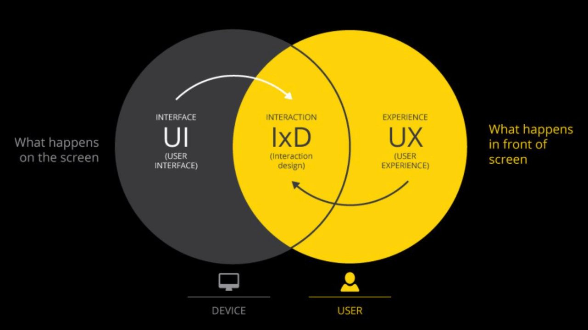

Meeting Agenda: To finalise our choice of mobile/web asset
My group began by brainstorming potential options before coming together to refine our ideas. Since I use mobile applications more frequently than web interfaces, I naturally gravitated toward them. From there, I shortlisted a few familiar apps:
My everyday tools, Google Maps and Google Calendar
A staple for scheduling meetings in University, when2meet
Reflecting on when2meet was particularly eye-opening. I had always criticised it for its outdated UI, but through a more critical lens, I realised how effective it actually is. With all necessary inputs displayed on a single page, the experience is almost effortless.

This reminded me that good design is not just about aesthetics, but about enabling users to achieve their goals efficiently. Still, I noted its limitations like the lack of time zone support, which highlighted how small gaps can become critical barriers in certain contexts.
The strongest mobile application evaluation I brought to the meeting was NUSmart Dining, launched in 2022 to reduce canteen crowd congestion at peak timings. As a frequent user, I had already noticed areas where it could be improved. To evaluate it systematically, I deliberately navigated through each page (beyond onboarding, since I was already logged in) and reflected on the typical actions I perform as a user. Norman’s heuristics provided a useful framework to make sense of my observations — for instance, noticing when the app lacked visibility of system status or when affordances were unclear.

One challenge I faced during the meeting was the distinction between Mobile Interaction Design (IxD) and User Experience (UX) Design. As we presented our ideas, I felt that many of our points were framed from the perspective of UX, as they revolved around how the user feels while using the app and the overall satisfaction of the experience. This left me questioning how this module differed from NM3243 User Experience Design.
To clarify my doubts, I did further reading about the differences between the two. I began to understand that IxD has a narrower but more technical focus on how the system behaves in response to user inputs, and how clearly those responses guide users through the journey. Whereas, UX considers the entire user journey. It is important to note that IxD contributes to UX, similar to a subset.

This distinction shifted how I approached evaluating the NUSmart Dining app. Instead of framing my frustrations purely as usability issues, I began pinpointing where the interactions themselves could be improved. This reframing reminded me that as a designer, I should understand the mechanics of interaction that either hinder or empower the user in achieving their goal.
Moving forward, instead of just noticing that users are frustrated, I want to ask myself: Am I distinguishing between what I find “annoying” versus what actually breaks an interaction for the user? Does this critique suggest an actionable design change, or is it simply an observation? I believe this can help mature my design thinking and process.
- When2Meet vs. LettuceMeet: a case study in UI and aesthetics
- UX vs IA vs UI vs IxD design differences (& what they stand for)
- What is the difference between Interaction Design and UX Design?
- Interaction Design vs UX: What’s the Difference?
- UI Design vs. UX Design vs. Interaction Design vs. Visual Design: How Do They Differ?